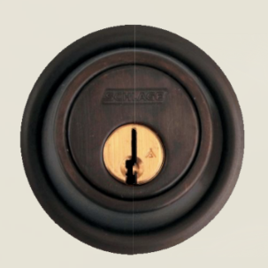
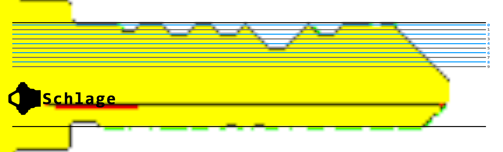

Get access to the steam tunnels.
If we look in Minty's room, we see 2 things: A key bitting machine which takes a number and gives us an image of a key, and a keyhole in a seperate room that takes in an image and hopefully unlocks the door.
However Minty all but tells us that we need to find a key to copy somewhere, and that we'll probably see someone walking around with it. Sure enough, every time you enter Minty's room you'll see someone hopping into the next door. If you use your network tab you can get their avatar (krampus.png) and look at the massive key strapped to their belt.

As mentioned in the talk, it's possible to get the bitting number from this image. First we need the make of the key, which we can get by squinting at the image used for the lock - It's a schlage.

Now we can line up the guide for schlage from deviant's talk (get it here) and read the bitting number.

1-2-2-5-2-0
Punch that into the machine then put it in the keyhole and we get access to the steam tunnels.
If you talk to Krampus a bit then you get the answer for Objective 7: 'Krampus Hollyfeld'